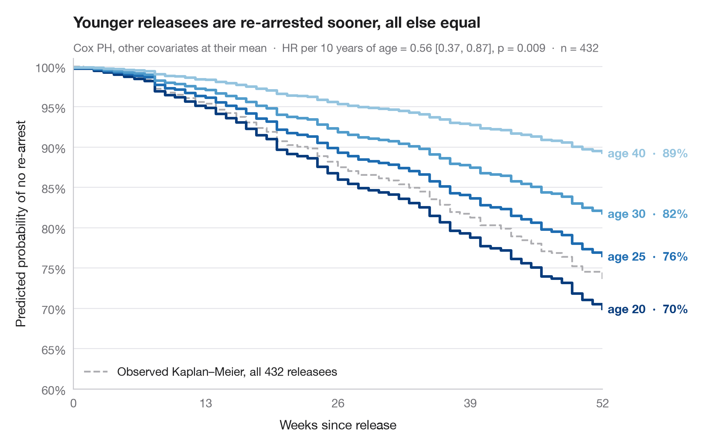

Courbes de survie ajustées
Survie prédite par un modèle de Cox pour plusieurs âges, les autres covariables étant fixées à leur moyenne.

Un rapport de risques est difficile à appréhender ; une courbe de survie, non. Ici, un modèle à risques proportionnels de Cox ajusté sert à prédire la courbe de survie complète d'individus hypothétiques qui ne diffèrent que par l'âge, toutes les autres covariables étant fixées à leur moyenne dans l'échantillon. L'écart vertical entre les courbes traduit l'effet de l'âge en probabilité de ne pas être arrêté de nouveau.
Les données sont l'étude de Rossi sur la récidive (lifelines.datasets.load_rossi). Le modèle est ajusté avec lifelines.CoxPHFitter sur les sept covariables et les courbes proviennent de predict_survival_function() ; la courbe de Kaplan–Meier observée sur l'ensemble de l'échantillon est tracée en gris à titre de référence.
Le code et le texte à l'intérieur des figures sont en anglais.
import matplotlib.pyplot as plt
import numpy as np
import pandas as pd
from lifelines import CoxPHFitter, KaplanMeierFitter
from lifelines.datasets import load_rossi
# Data: weeks to re-arrest after release from prison
df = load_rossi()
cph = CoxPHFitter().fit(df, duration_col="week", event_col="arrest")
# Hypothetical profiles: everything at the mean, age varies
ages = [20, 25, 30, 40]
profiles = pd.DataFrame([df.drop(columns=["week", "arrest"]).mean()] * len(ages))
profiles["age"] = ages
surv = cph.predict_survival_function(profiles, times=np.arange(0, 53))
colors = plt.cm.Blues(np.linspace(0.95, 0.4, len(ages)))
fig, ax = plt.subplots(figsize=(8, 5))
# Observed Kaplan–Meier curve of the whole sample, for reference
km = KaplanMeierFitter().fit(df.week, df.arrest)
ax.step(km.survival_function_.index, km.survival_function_.iloc[:, 0], where="post",
color="#AEAEB2", lw=1.5, ls="--", label=f"Observed Kaplan–Meier, all {len(df)} releasees")
ax.legend(loc="lower left")
# Model-predicted curves, labelled at their end
for col, age, c in zip(surv.columns, ages, colors):
s = surv[col]
ax.step(s.index, s, where="post", color=c, lw=2.2)
ax.text(52.5, s.iloc[-1], f"age {age} · {s.iloc[-1]:.0%}", va="center",
fontsize=10, color=c, fontweight="semibold")
hr10 = np.exp(10 * cph.params_["age"])
lo, hi = np.exp(10 * cph.confidence_intervals_.loc["age"])
p = cph.summary.loc["age", "p"]
ax.set(xlim=(0, 52), ylim=(0.6, 1.01), xticks=range(0, 53, 13),
xlabel="Weeks since release", ylabel="Predicted probability of no re-arrest")
ax.yaxis.set_major_formatter(plt.matplotlib.ticker.PercentFormatter(1, decimals=0))
ax.set_title("Younger releasees are re-arrested sooner, all else equal", pad=26)
ax.text(0, 1.02, f"Cox PH, other covariates at their mean · HR per 10 years of age = "
f"{hr10:.2f} [{lo:.2f}, {hi:.2f}], p = {p:.3f} · n = {len(df)}",
transform=ax.transAxes, fontsize=9.5, color="#6E6E73")
plt.show()
Les figures utilisent le style Statlas (facultatif) : ajoutez plt.style.use("statlas.mplstyle") pour obtenir exactement le même rendu.
Comment citer
Statlas est créé et maintenu par Thierry Warin. S'il vous a été utile dans vos travaux, merci de le citer.
Warin, T. (2026). Adjusted survival curves. In Statlas: The Python Gallery of Statistical Graphics. https://warint.github.io/pystatlas/survival/adjusted-survival/
@misc{warin2026statlas,
author = {Warin, Thierry},
title = {Statlas: The Python Gallery of Statistical Graphics},
year = {2026},
howpublished = {\url{https://warint.github.io/pystatlas/}},
note = {Source code: https://github.com/warint/pystatlas}
}Plus dans Analyse de survie

Courbes de Kaplan–Meier
Courbes de survie avec bandes de confiance, marques de censure, test du log-rank et tableau des effectifs à risque.
survminer::ggsurvplot(risk.table = TRUE)
Rapports de risques de Cox
Graphique en forêt d'un modèle à risques proportionnels de Cox avec rapports de risques (HR), IC à 95 % et valeurs p.
survminer::ggforest()
Risque cumulé
Courbes de risque cumulé de Nelson–Aalen avec bandes à 95 % pour trois grades tumoraux.
survminer::ggsurvplot(fun = "cumhaz")